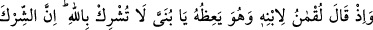
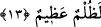
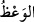

Ey genç, dünyâ rahat yeri değildir.
Nebiler ve veliler bile sıkıntıya düştüler.
13. Lokman, oğluna öğüt vererek: Yavrucuğum! Allâh’a ortak koşma! Doğrusu
şirk, büyük bir zulümdür, demişti.
“Lokman oğluna” En‘um’a -ki Lokman (a.s.)’ın künyesi Ebü’l-En‘um idi- “öğüt
vererek:” Yâni ey Muhammed! Lokman’ın oğluna şöyle dediği vakti kavmine hatırlat:
“Yavrucuğum! Allâh’a ortak koşma!” Kullukta hiçbir şeyi Allâh’a denk tutma.
“Doğrusu şirk büyük bir zulümdür.” demişti.” Çünkü şirk, nîmet sadece kendisinden
gelenle, kendisinden hiçbir nîmet gelmeyeni eşit tutmaktır. Keşfü’l-esrâr’da der ki:
“Kendine büyük bir zulümdür.” Şirkin büyüklüğü, onun asla bağışlanmamasıdır.
Ortağı olmayan Allâh’a hamd olsun,
O’ndan yüz çeviren nefsine zulmetmiş olur.
“__WORD__ (vaaz)”, korkutmakla birlikte olan sakındırmadır. Halîl şöyle der: “Vaaz, kalbin
incelmesine sebep olan faydalı öğütler vermektir.”
“Yavrucuğum” ifâdesi, merhamet ve şefkat için bir küçültmedir. Bu sebeple Lokman
(a.s.) oğluna, uyguladığı takdirde saâdete erişeceği güzel şeyleri tavsiye etmiştir.
Hz. Lokman’ın oğlu ve hanımı kâfir idiler. Müslüman olana kadar onlarla meşgul
oldu. Hz. Nuh’un oğlu ve hanımı ise müslüman olmamışlardı. Hz. Lut’un iki kızı ve
hanımının durumu da farklı idi. Onun iki kızı müslüman oldu, fakat hanımı küfürde
kaldı. Daha önce geçtiği gibi bazı rivâyetlere göre Hz. Lut’un hanımı müslüman
olmayınca taş kesildi.
Bazıları der ki: Lokman (a.s.)’ın oğluna ilk vaazı, şirkten uzak durması yönünde
olmuştur. Vaaz, nefsi Allâh’ın dışındaki şeylerle meşguliyetten sakındırmaktır. Bu ise
nefis, kalb ve ruhla külliyyen Hakk’a yönelmek (tefrîd)dir. O halde nefis ile ancak
Allâh’a hizmet ettirerek meşgul ol, kalb ile O’ndan başka bir şeyi düşünme, ruh ile de
O’ndan başka bir şeyi müşâhede etme. İşte Tevhîdde tefrîd makamı budur.
Kimin canı vahdet deryasında gark olacak olsa,
Cânânından hakîkat cevherini elde eder.
Allâh’ım! Bizi müferridlerden/tefrîd ehlinden kıl!